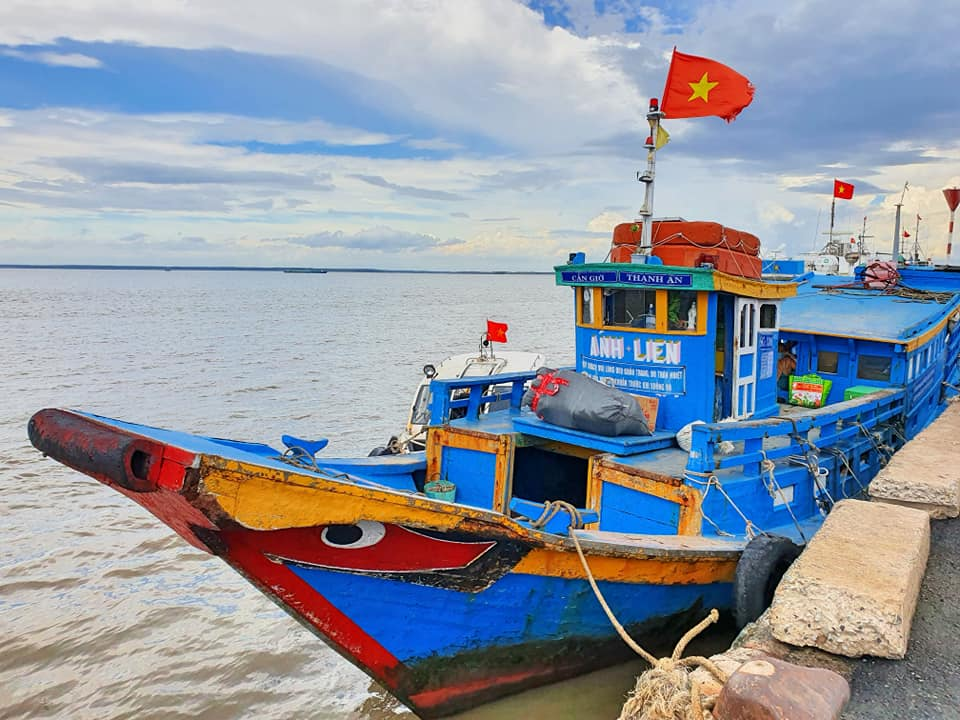

Di Sản Văn Hóa Quốc Gia

Tết Biển Miền Nam • Rằm Tháng 8 Âm Lịch
1. Lễ Hội Nghinh Ông Cần Giờ (Tết Biển)
Ý nghĩa: Tưởng nhớ và tạ ơn Thần Nam Hải (Đức Cá Ông / Cá Voi) – vị thần bảo hộ ngư dân trước giông bão; đồng thời cầu mong quốc thái dân an, mưa thuận gió hòa và một mùa vươn khơi bám biển đánh bắt hải sản bội thu, bình an trở về.
Các Hoạt Động Trọng Tâm:
-
Phần Lễ trang nghiêm: Lễ Thượng Kỳ, Lễ Cầu An, Lễ Cúng Tiền Hiền - Hậu Hiền và đỉnh cao là Lễ Nghinh Ông trên biển với hàng trăm đoàn ghe, tàu cá kết hoa đăng rực rỡ cùng cờ hoa lộng lẫy xuất phát từ thị trấn Cần Thạnh hộ tống đoàn ra khơi rước linh thần.
- Phần Hội rộn ràng: Chuỗi trò chơi dân gian miền biển (bắt vịt nước, đua thuyền nan, đập niêu, đi cà kheo), biểu diễn hát Bả Trạo truyền thống, lễ hội rước đèn Trung thu thiếu nhi, không gian ẩm thực hải sản Cần Giờ và những đêm Đờn ca tài tử Nam Bộ sâu lắng.
Nguồn tham khảo & Tư liệu:
[Sở VHTT TP.HCM]
[Báo Tuổi Trẻ]
[VinWonders]
[Cục Du Lịch]
[Video Lễ Hội]
[Theo Thuyền Ra Khơi]